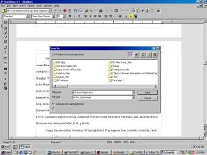
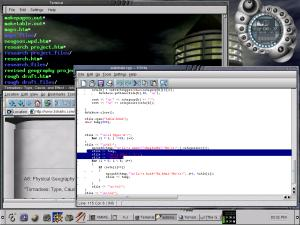
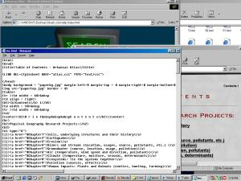
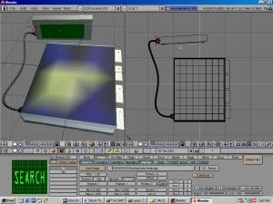
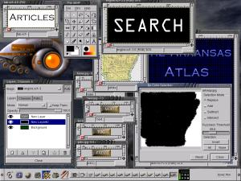

Appendix II
A b o u t
What is The Atlas
The Atlas TeamTim CaswellPeter Ojezua John Simmons Ryan Bundy ArticlesUCA Geography StudentsWeb Page CodingAll Web page coding done by Tim Caswell of Three Sharks EntertainmentInterface designJosh JohnsonTim Caswell Graphics DesignAll custom graphics done by Tim Caswell of Three Sharks EntertainmentSoftware usedMicrosoft Word, Staroffice, Word Perfect (To convert original word documents to html)Blender(For 3d design rendering) GIMP(For 2d graphics and cropping and mapping of 3d Graphics) GCC C++ Compiler for Linux (Used to compile actual html files from database) Mandrake Linux (Used to run GCC) Notepad (Used to edit html files and c++ code) |
 Using Staroffice to convert to .html from .doc  Using gcc c++ to compile database  Using Notepad to create and edit html files |
|  |  |
| Using Blender to draw main page | Using Gimp to create and edit Graphics |